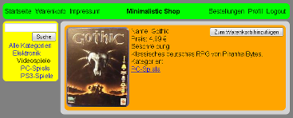

Minimalistic Shop ist eine Webseite, die im Sommersemester 2013 im Modul Relationale Datenbanken des Studienganges Bachelor Media Systems (B-MS) entstanden ist.
In dieser technischen Demonstration eines Online-Shops werden Produkte verschiedenster Kategorien zum Kauf angeboten. Artikel können zum Warenkorb hinzugefügt werden und nach der Registrierung eines neuen Benutzeraccounts bzw. nach dem Login bestellt werden. Die Produktkategorien sind hierarchisch gegliedert, Produkte können in mehreren Kategorien stehen, und die Suche lässt sich auf bestimmte Kategorien eingrenzen.
Vorgabe für das Projekt war es, Java-Klassen, JDBC, Tomcat und JSP zu verwenden. Statt Java habe ich Scala verwendet, was zu Java-Klassen kompiliert wird. Die JSP-Dateien enthalten keine Anwendungslogik, sondern rufen lediglich jeweils eine Scala-Methode mit den Parametern der HTTP-Verbindung auf.
Aufgeteilt ist die Architektur des Scala-Projektes in drei Pakete. Ein Paket für den Datenbankzugriff mittels Prepared Statements, Geschäftslogik und Transaktionen, eines für die XML-Ausgabegenerierung und das letzte Paket für die Validierung der Eingabeparameter. Das XML, welches die Webseite ausliefert, wird vom Browser des Besuchers mittels XSLT 1.0 zu HTML geparst.
Erreichbar ist der Minimalistic Shop hier.
Seit dem Umzug von einem anderen Server tritt gelegentlich ein unbekannter Fehler im Zusammenhang mit dem Server-Cache auf, den ich mir bisher noch nicht genauer angeschaut habe. Der Fehler dürfte pro Besuch nur einmalig auftauchen, dann einfach die gewünschte Seite erneut aufrufen.
| Sprachen | Scala, SQL, XML, XSLT, HTML, CSS, JavaScript, Java[1]Die einzige Verwendung von Java-Quelltext in diesem Projekt ist in den JSP-Dateien und in den kopierten Klassen für bcrypt und Mersenne-Twister von einem älteren Projekt von mir. |
|---|---|
| Technologien | XSD, DTD, MySQL, Prepared Statements, JDBC, bcrypt, Mersenne-Twister, BigDecimal, Tomcat, JSP |
| IDE | Eclipse mit Scala IDE |
| Beteiligte | 1 |

{kind=link}